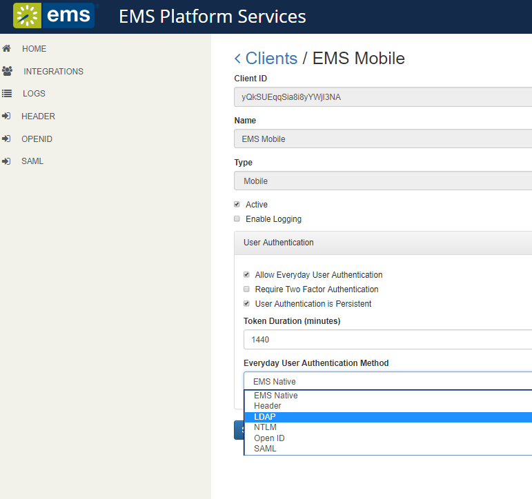
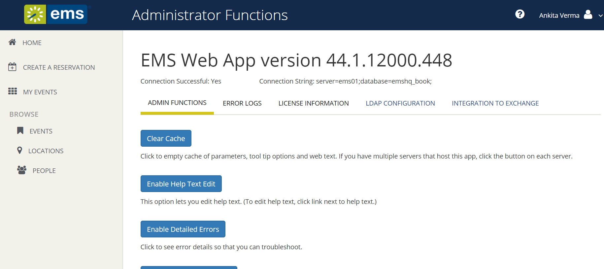

Follow the steps in this section to authenticate your users via the Lightweight Directory Access Protocol (LDAP). After successful connection to the platform API, the user will log in following the scenario below:
If the credentials are missing when the user taps Sign In, an error message will display stating that fields are required. If the platform API is unable to verify the credentials, the mobile app will inform the user based on that response.
To use LDAP authentication, you will need to:


Tip: This is the same process you use for
Assuming you have installed the EMS Platform Services e.g. https://yourcompany.com/ems-platform-api, then you can test the configuration with a simple curl command:
Tip: You can also use the API's Swagger interface to accomplish this goal.
You should see a portion of the JSON response that looks like this (unrelated details omitted for brevity):
{
...
"additionalProperties": {
"authConfig": {
"activities":"ldap" // <-- these are the critical lines
"ui":"ldap"
}
}
}
Assuming you have installed the EMS Platform Services API at https://ems.yourcompany.com/endpoint, you can test the authentication with a simple curl command:
curl -X POST -H 'x-ems-consumer: MobileApp' -H 'Content-Type: application/json' -d '{"username":"your_username", "password":"your_password"}' https://ems.yourcompany.com/endpoint...authentication
...where your_username and your_password are your credentials.
Note: api/v1/authentication is the endpoint within the API where your request must be sent.